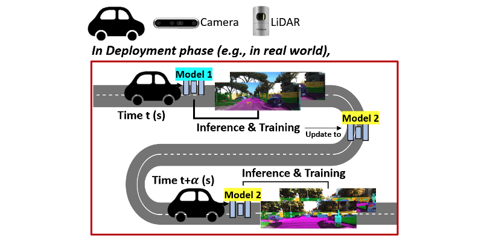
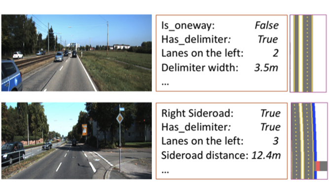
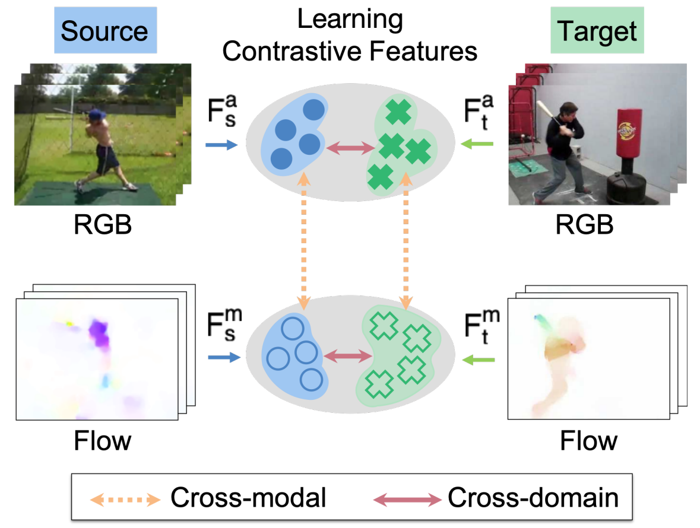
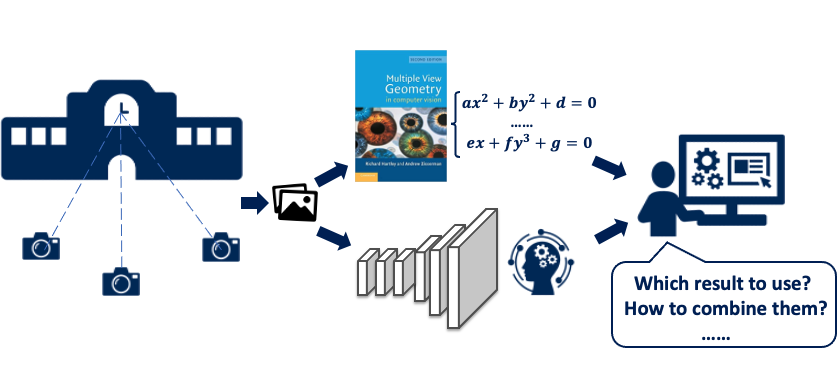

Bingbing Zhuang
I am currently a Researcher at NEC Laboratories America, headed by Professor Manmohan Chandraker. I graduated from National Univeristy of Singapore with Ph.D. degree in 2019, advised by Professor Loong Fah Cheong and Professor Gim Hee Lee. Before, I obtained my Bachelor's degree at University of Science and Technology of China (USTC) in 2015.
[CV] [Google Scholar] Email: bbzhuang92 [at] gmail [dot] com , bzhuang [at] nec-labs [dot] comWe are hiring 2023 summer interns to research on 3D vision, please drop me an email if interested.
Research Interest
3D Computer Vision in general, Structure-from-Motion, SLAM, 3D reconstruction, 3D localization, 3D scene understanding.
Publications
|
|
NeurOCS: Neural NOCS Supervision with NeRF for 3D Object Detection
Zhixiang Min, Bingbing Zhuang, Samuel Schulter, Buyu Liu, Enrique Dunn, Manmohan Chandrake CVPR, 2023 [PDF coming] |
|
 |
MM-TTA: Multi-Modal Test-Time Adaptation for 3D Semantic Segmentation
Inkyu Shin, Yi-Hsuan Tsai, Bingbing Zhuang, Samuel Schulter, Buyu Liu, Sparsh Garg, In So Kweon, Kuk-Jin Yoon CVPR, 2022 [PDF] [Project Page] [bibtex] Test-time domain adapation for 3D semantic segmentation leveraging image-Lidar cross-modal consistency. |
|
 |
Weakly But Deeply Supervised Occlusion-Reasoned Parametric Road Layouts
Buyu Liu, Bingbing Zhuang, Manmohan Chandraker CVPR, 2022 [PDF] [bibtex] Geometric transformation creates dense occlusion-aware semantic map from compact parametric annotation, facilitating road layout estimation. |
|
 |
Learning Cross-Modal Contrastive Features for Video Domain Adaptation
Donghyun Kim, Yi-Hsuan Tsai, Bingbing Zhuang, Xiang Yu, Stan Sclaroff, Kate Saenko, Manmohan Chandraker ICCV, 2021 [PDF] [Supplementary] [bibtex] A cross-domain and cross-modal (geometry and appearance) constrastive learning framework for video domain adpatation. |
|
 |
Fusing the Old with the New: Learning Relative Camera Pose with Geometry-guided Uncertainty
Bingbing Zhuang, Manmohan Chandraker CVPR, 2021 (Oral Presentation) [PDF] [Supplementary] [5-min Talk] [Blog] [bibtex] A principled way to fuse the geometric camera pose estimation with CNN predictions, via learning geometry-guided uncertainty, driven by a self-attention graph neural network. |

|
Pseudo RGB-D for Self-Improving Monocular SLAM and Depth Prediction Lokender Tiwari, Pan Ji, Quoc-Huy Tran, Bingbing Zhuang, Saket Anand, Manmohan Chandraker ECCV, 2020 [PDF] [Project Page] [1-min Talk] [bibtex] Geometric SLAM and self-supervised monocular CNN-depth learning can benefit each other. |

|
Image Stitching and Rectification for Hand-Held Cameras Bingbing Zhuang, Quoc-Huy Tran. ECCV, 2020 [PDF] [Project Page] [1-min Talk] [bibtex] Joint rolling shutter image stitching and distortion removal, by deriving a new rolling-shutter-aware homography and a minimal 5-point solver. |

|
Understanding Road Layout from Videos as a Whole Buyu Liu, Bingbing Zhuang, Samuel Schulter, Pan Ji, Manmohan Chandraker. CVPR, 2020 [PDF] [Supplementary] [bibtex] Learning parametric road layout from non-parametric semantic 3D reconstruction obtained by Structure-from-Motion. |

|
Learning Structure-and-Motion-Aware Rolling Shutter Correction Bingbing Zhuang, Quoc-Huy Tran, Pan Ji, Loong Fah Cheong, Manmohan Chandraker. CVPR, 2019 (Oral Presentation) [PDF] [Project Page] [bibtex] Theoretical degeneracy on SfM with a rolling-shutter camera and leveraging data-driven priors through a network that learns camera motion and scene structure to undistort a single rolling shutter image. |

|
Degeneracy in Self-Calibration Revisited and a Deep Learning Solution for Uncalibrated SLAM Bingbing Zhuang, Quoc-Huy Tran, Gim Hee Lee, Loong Fah Cheong, Manmohan Chandraker. IROS, 2019 [PDF] [YouTube Video] [Project Page] [bibtex] Theoretical degeneracy on radial distortion self-calibration in forward motion and a network to learn radial distortion parameters and camera intrinsics for SLAM. |

|
Baseline Desensitizing In Translation Averaging Bingbing Zhuang, Loong Fah Cheong, Gim Hee Lee CVPR, 2018 [PDF] [Supplementary] [Code] [bibtex] A baseline-insensitive bilinear objective function for translation averaging in global SfM. Theoretically revealing the underlying subtle difference that leads to the performance gap between two convex methods, LUD and Shapefit/kick. |

|
Rolling-Shutter-Aware Differential SfM and Image Rectification Bingbing Zhuang, Loong Fah Cheong, Gim Hee Lee ICCV, 2017 [PDF] [Supplementary] [Dataset] [bibtex] See C++ Code reimplemented by Felix Graule et al. as a 3D Vision Course Project in ETH Zurich Develop a rolling-shutter-aware differential SfM method for depth and motion recovery, which is further leveraged to remove rolling shutter distortion. |
Professional Services
Conference Reviewer: CVPR, ICCV, ECCV, NeurIPS, ICML, ICLR, ICRA, IROS, 3DV, AAAI, WACV, ACCV, BMVC, ICPR, ACMMM
Journal Reviewer: TPAMI, TIP, RA-L